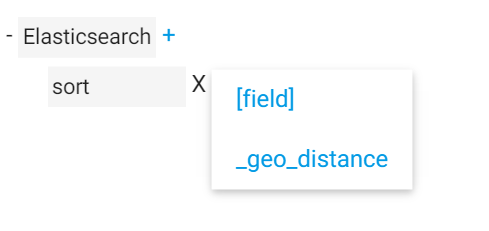

(Untitled)
自定义配置
 ESQ采用可视化的“树”一步步引导你写出json语句，非常酷！不仅如此，只需写些配置文件，你可以很方便的为“树”编写扩展分支。形成树的指引文件叫做parts，在part.js文件内，你只需扩展part.js 就可以写出树的分支。
ESQ采用可视化的“树”一步步引导你写出json语句，非常酷！不仅如此，只需写些配置文件，你可以很方便的为“树”编写扩展分支。形成树的指引文件叫做parts，在part.js文件内，你只需扩展part.js 就可以写出树的分支。
第一，你需知道如何生成选项菜单。

下面的3行代码就可以生成根元素
var parts = {
elastic_search:{
root:true //表示为根元素
}
}
之后添加选项,sort:{}会自动生成菜单
var parts = {
elastic_search:{
sort:{},
filter:{},
query:{}
from:{}
size:{}
}
}
第二，生成子子菜单
你在树状图上单击‘sort’，想为‘sort’添加选项菜单  为sort定义括展属性
var parts = {
elastic_search:{
sort:{
extend:'sort'
},
'''
}
}
再定义sort根
var parts = {
elastic_search:{
sort:{
extend:'sort'
},
filter:{},
'''
},
sort:{ //此名称必须和extend:'sort'相等
'[field]': {},
_geo_distance: {},
}
}
之后ESQ会自动管理sort扩展，生成sort的子菜单。
请按照js规则写此文件，由于js中变量不能以[开头，所以[field]'增加'号。
为使点击sort后自动弹出菜单，请为sort增加choose属性
var parts = {
elastic_search:{
sort:{
choose:true,
extend:'sort'
},
filter:{},
'''
第三，生成预制模板
很多情况，如下图，你需要预先生成很多子项目，只需增加child:[]属性即可。

var parts = {
elastic_search:{
'''
},
sort:{
'[field]': {},
_geo_distance: {
child: [
{field: 'location' //子项目名称用field
child: [ //可以无限添加child
{ field: 'lat'},
{ field: 'lat'},
]
}，
]
}
]
}
}
你会发现子模板是默认这段的你需要添加open:true展开模板

_geo_distance: {
open:true, //展开模板
child: [
{field: 'location'
open:true, //请确保每项都增加属性
child: [
{ field: 'lat'
open: true},
{ field: 'lat'
open: true},
]
}，
]
}
你会发现在location后面出现删除标记，而location是不可删除的，你只需增加undelete的字段
field: 'location',
undelete: true,//确保不会删除
open: true,
child: [
{
field: 'lat',
undelete: true //每项都要写
},
第四，组绑定，
有时候你希望一个选项只能被添加一次，如下图sort，被添加后不再出现在菜单里

你只需增加 group:1，每个菜单项只能被添加一次。
var parts = {
elastic_search:{
sort:{group:1},
filter:{group:2},
query:{group:3}
from:{group:4}
size:{group:5}
}
}
如果gorup的值相同,则不能同时出现在一个分支中，如果值不同可以出现在同一分支中
sort:{group:1},
filter:{group:1},
更多属性
value: value 预先填写值
arrayValue:[value,value] 会出现下拉菜单
placeholder 出现在值的提示词
array:true 生成的子选项按数组格式，而不是对象格式
disabled：true 禁用字段
field:field 会覆盖默认的键值